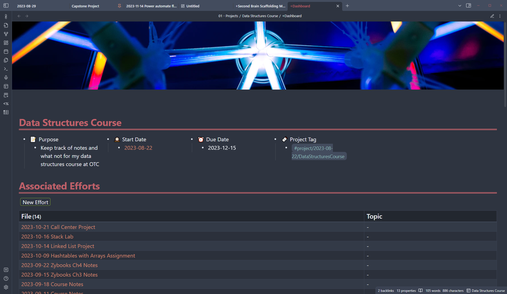
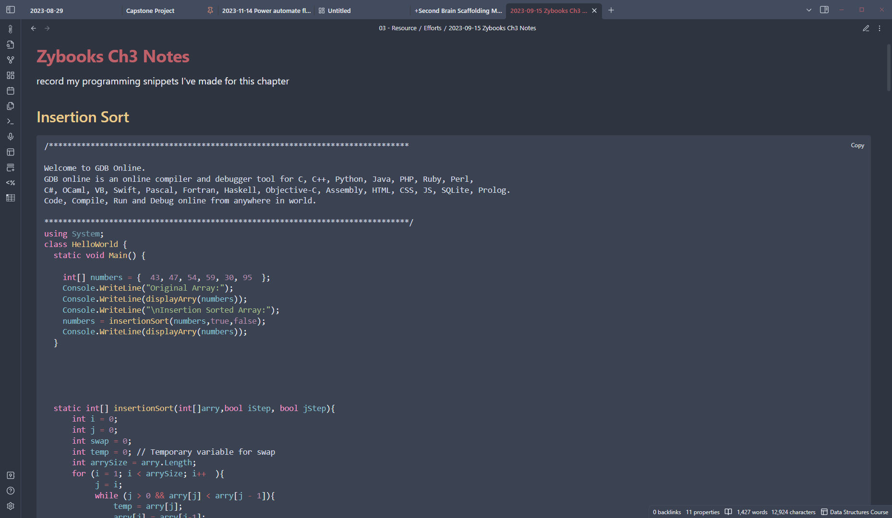

My Hobbies
Obsidian MD
 Obsidian Markdown is my prefered note taking application. Its a highly customizable markdown editor that uses html,css, and javascript to run. Unless I'm burnt out on school and software development, I normally spend a good hour everyday tinkering with it to make it "mine". It's often overwhelming, but I love how I can make it suit all my note taking needs with a large lot of community made plugins. Most people wouldn't call a note taking app a hobby, but I love obsessing over organizational schemas and creating plugins for Obsidian
Videogame Photography?
This sounds some what odd, but I enjoy it when games have a photo mode in them. I enjoy capturing the many stories that are scattered throughout game. I used to be a shutterbug when I was kid, and videogame photography allows me to be that without all the struggles of real life photography.